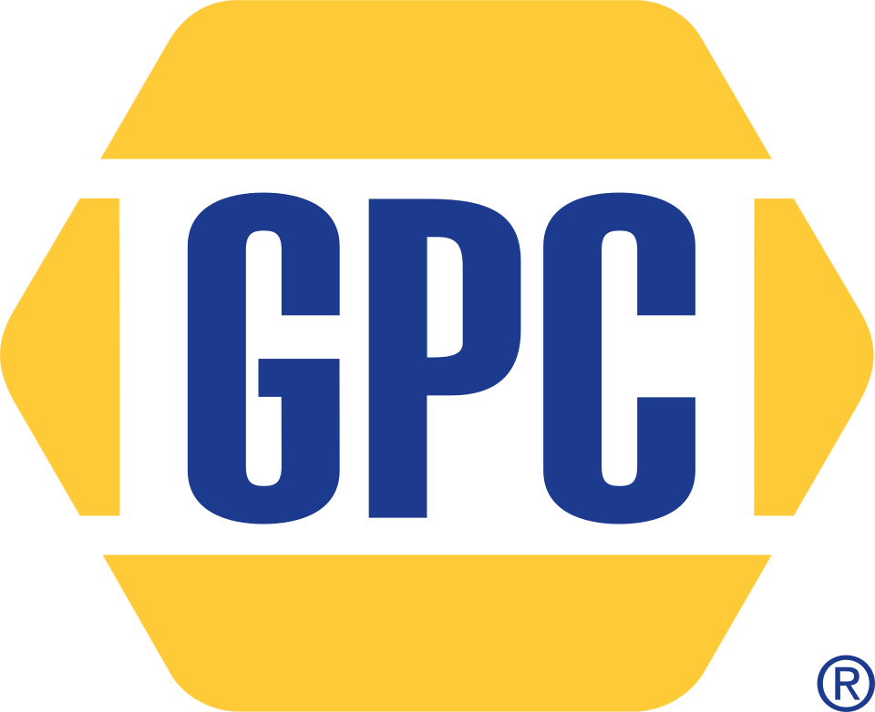

Genuine Parts Company
Genuine Parts Company는 애틀랜타에 본사를 둔 미국의 자동차 및 산업용 부품 유통 기업이다. Motion과 NAPA Auto Parts를 중심으로 두 개의 주요 사업 부문을 운영한다.
최종 업데이트

Genuine Parts Company는 어떤 브랜드인가
이 회사는 자동차 부품과 산업용 제품을 유통하며 약 60,000명의 직원을 둔다. 미국 외에도 오스트랄라시아, 벨기에, 캐나다, 프랑스, 독일, 멕시코, 네덜란드, 폴란드, 영국에서 사업을 운영했다.
주요 사업은 산업용 제품에 집중하는 Motion과 자동차 부품 브랜드 NAPA Auto Parts로 구성한다. Motion은 베어링과 산업용 소모품에서 자동화, 운반, 유압, 유체 동력, 로봇 관련 제품으로 영역을 확장했다.
NAPA Auto Parts는 주로 북미에서 부품을 판매하며 일부 매장은 회사가 직접 운영하고 다수는 독립 사업자가 운영한다.
Genuine Parts Company는 어떻게 시작되고 성장했나
위키데이터 팩트는 설립 연도를 1925년으로 제시하며, 본문은 Carlyle Fraser와 Malcolm Fraser 형제가 1928년 애틀랜타에서 회사를 설립했다고 기록한다. 회사는 1976년 Motion을 인수해 산업용 부품 사업을 확대했다.
1998년 캐나다의 UAP Inc.를 인수했고 2013년에는 호주의 자동차 부품 공급업체 Exego Group을 인수했다. 2017년에는 Inenco Group 지분 35%와 Alliance Automotive Group을 인수했으며, 2022년에는 자동화·운반·유체 동력 솔루션을 제공하는 Kaman Distribution Group을 인수했다.
Genuine Parts Company의 브랜드 아이덴티티는 무엇인가
자동차 부품 유통 브랜드 NAPA Auto Parts와 산업용 제품 유통사 Motion을 양대 사업 축으로 운영한다는 점이 특징이다.
Genuine Parts Company의 대표 제품과 서비스는 무엇인가
Motion은 산업용 제품 부문으로서 베어링, 산업용 소모품, 자동화, 운반, 유압, 유체 동력, 로봇 관련 제품을 제공한다. 2023년 기준 약 9,000명의 직원과 170,000명의 고객을 보유한다.
NAPA Auto Parts는 북미를 중심으로 자동차 부품을 판매하며 2020년 약 6,000개 매장을 운영했다. 매장 일부는 Genuine Parts Company가 소유·운영하고 대부분은 독립 사업자가 소유·운영한다.
회사는 이 두 사업을 통해 자동차 부품과 산업용 부품 유통 시장에 참여한다.
Genuine Parts Company는 지금 어떤 상태인가
William P. Stengel II가 사장 겸 최고경영자를 맡고 있으며, Paul Donahue는 2024년 회장직으로 전환했다.
회사는 약 60,000명의 직원을 두고 Motion과 NAPA Auto Parts를 주요 사업으로 운영한다. 2026년 2월 17일에는 회사를 두 개의 상장기업으로 분할할 계획을 발표했다.
Genuine Parts Company 로고는 어떻게 변해왔나
자주 묻는 질문
Genuine Parts Company는 어느 나라 브랜드인가요?
Genuine Parts Company는 미국의 모빌리티 브랜드입니다.
Genuine Parts Company는 언제 설립되었나요?
Genuine Parts Company는 1925년 설립되었습니다.
Genuine Parts Company의 브랜드 아이덴티티는 무엇인가요?
자동차 부품 유통 브랜드 NAPA Auto Parts와 산업용 제품 유통사 Motion을 양대 사업 축으로 운영한다는 점이 특징이다.
Genuine Parts Company의 대표 제품은 무엇인가요?
Motion은 산업용 제품 부문으로서 베어링, 산업용 소모품, 자동화, 운반, 유압, 유체 동력, 로봇 관련 제품을 제공한다.
Genuine Parts Company는 현재 어떤 상태인가요?
William P.
Genuine Parts Company의 본사는 어디에 있나요?
Genuine Parts Company의 본사는 애틀랜타에 있습니다(위키데이터 기준).
Genuine Parts Company의 공식 웹사이트는 어디인가요?
Genuine Parts Company의 공식 웹사이트는 http://www.genpt.com 입니다.
출처와 검증
Genuine Parts Company 관련 참고: 공식 웹사이트 · 위키데이터 Q5533818 · 영어 위키백과. 브랜드명은 한글과 원어를 함께 표기하되 데이터에 없는 표기는 만들지 않습니다. 기원 국가·설립연도는 검수된 정의문에서 확인된 값을 우선하고, 없을 때만 공식 웹사이트 URL이 일치하는 위키데이터 개체의 값을 씁니다. 위키데이터 값은 2026-09-12 기준입니다.